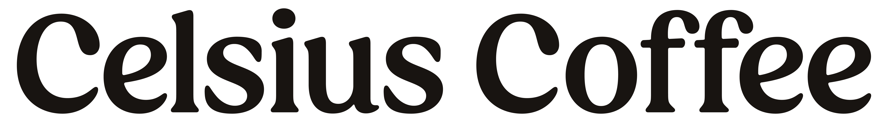

A strategic audit of every UI box in the Celsius Coffee pickup app — mapped to the one thing each is supposed to do, and the metric that proves it's doing it.
The pickup app's only reason to exist is to grow sales. Sales is the product of orders (how many transactions) and AOV (how much each transaction is worth). Every feature in the app must push one of these — or both. The table below tags each feature by which lever it pulls.
| Feature | Objective | How it drives sales | Metric |
|---|---|---|---|
| Poster carousel | Both | Pushes new launches (new orders) + premium SKUs (AOV). | poster_tapped · per-poster CTR gap |
| Member greeting + points | Orders | Shows balance & tier on landing — a forward reason to come back. | badge → /rewards CTR gap |
| Outlet picker pill | Orders | Surfaces real-time busy/closed state — prevents wasted-trip churn. | mismatched-outlet rate at checkout gap |
| "Your usual" carousel | Orders | One-tap reorder of last drink — collapses decision time, raises frequency. | usual → cart conversion gap |
| Claimable vouchers row | Orders | One-tap claim of welcome/promo/mystery — creates urgency to visit. | claim → order conversion gap |
| Active missions row | Orders | "3 visits this week → reward" — engineers a frequency streak. | mission completion % gap |
| Featured products | AOV | Curated cross-sell — pulls add-ons into baskets the user wasn't there for. | featured CTR · featured-driven AOV gap |
| Feature | Objective | How it drives sales | Metric |
|---|---|---|---|
| Category pills | Orders | Fast browse → faster decision → more sessions converting. | category CTR gap |
| Search bar | Orders | Bypasses browse for known intent — high-conversion path. | search → cart conversion gap |
| Product detail | Orders | Gateway to add-to-cart. PDP views = top of order funnel. | product_viewed tracked |
| Modifiers (required + optional) | AOV | The single biggest AOV lever. Size, milk, syrups, shots — each priced incrementally. | modifier attach rate · AOV uplift gap |
| Quantity stepper | AOV | Encourages multi-item orders without leaving PDP. | avg qty per add gap |
| Add to cart CTA | Orders | The conversion event. Sticky bottom, live total shown. | cart_add · PDP → cart conv. tracked |
| Feature | Objective | How it drives sales | Metric |
|---|---|---|---|
| Apply voucher slot | Both | Pulls deadline-urgent visits forward (Orders). "Free pastry with drink" forces multi-item (AOV). | reward_reserved · voucher apply rate tracked |
| Price summary & SST | Orders | Transparent breakdown reduces abandon at total reveal. | cart → checkout conv. gap |
| Payment methods (4) | Orders | Card · Apple Pay · FPX · GrabPay — meets the buyer where they pay. | method mix · per-method success tracked |
| Zero-amount bypass | Orders | Skips Stripe sheet on fully-discounted orders → no payment-step abandonment. | payment_skipped rate tracked |
| Place order CTA | Orders | The final conversion event in the funnel. | checkout_started→order_placed tracked |
| Feature | Objective | How it drives sales | Metric |
|---|---|---|---|
| Reorder button | Orders | Highest-value action in the app. Hydrates cart from past order → one tap to a new order. | reorder → order_placed gap |
| Order stepper (live status) | Orders | Reduces "is it ready?" anxiety → trust → repeat use. | time-to-ready by outlet gap |
| Mystery Bean reveal | Orders | Variable-reward scratch card. Dopamine hook that drives the next order. | reveal rate · post-reveal D7 return gap |
| Swipe-to-collect | Orders | Confirms pickup without barista — operationally cheaper, faster handoff. | swipe / auto / barista mix gap |
| Pending-payment retry | Orders | Recovers orders that failed payment — direct revenue rescue. | retry → success rate gap |
| Feature | Objective | How it drives sales | Metric |
|---|---|---|---|
| Points (Beans) balance | Orders | Earnable forward currency — a reason to return that compounds with each visit. | orders / active member / month gap |
| Voucher wallet | Orders | Active vouchers visible → next-visit prompt every app open. | voucher utilisation (used / issued) gap |
| Voucher expiry deadlines | Orders | The urgency engine. "Use by Friday" pulls a visit forward. | expired-without-use % gap |
| Free-item vouchers | AOV | "Free pastry with drink" — looks like a discount, behaves like an AOV lift. | avg items / order with voucher gap |
| Missions / challenges | Orders | Behavioural nudge that engineers a 2-3 visit streak. | mission completion % · post-streak D30 tracked |
| Spend Beans catalog | Orders | Points sink. Redemption brings the user back in. | redemption rate gap |
| Feature | Objective | How it drives sales | Metric |
|---|---|---|---|
| Tier ladder (6 tiers) | Orders | Bronze→Silver→Gold→Elite. Status retains; loss-aversion locks in. | tier retention quarter-over-quarter gap |
| Earn multiplier per tier | Orders | Higher tier = more Beans per RM = stronger reason to keep ordering on app. | app share by tier gap |
| Quarterly unlock window | Orders | "Spend RM X in Y days to unlock {next}" — quarter-end spike pressure. | quarter-end-week order spike gap |
| Free birthday drink | Orders | Annual emotional moment — forces the user back into the app once a year minimum. | birthday-month visit rate gap |
| Tier perks ("3rd drink free") | AOV | Multi-item-unlock reward — pulls 1-item orders into 2- or 3-item orders. | items / order, by tier gap |
| Feature | Objective | How it drives sales | Metric |
|---|---|---|---|
| Phone+OTP sign-in | Orders | Frictionless onboarding → faster first order. | login_success · OTP funnel tracked |
| Browse-without-auth | Orders | Lets curious users see menu before committing → softens the signup gate. | browse → signup rate gap |
| Profile completion (birthday) | Orders | Birthday field gates the free-birthday-drink reward. | % members with birthday filled gap |
| Identity QR / member card | Orders | Connects walk-in orders to the member — extends loyalty to in-store too. | POS scan rate gap |
| Feature | Objective | How it drives sales | Metric |
|---|---|---|---|
| Referral code share | Orders | Existing customer brings in a new buyer; both sides get a free drink. | referral → first-order conv. · CAC gap |
| Coffee Wrapped | Orders | Annual recap, share-as-image → organic social distribution + retention moment. | share rate · attributed installs gap |
| Welcome voucher (new user) | Orders | Lowers the bar to the first transaction post-signup. | signup → first-order conv. gap |
| Feature | Objective | How it drives sales | Metric |
|---|---|---|---|
| Push notifications | Orders | Re-activation channel — "order ready", "voucher expiring", "back in stock". Free re-engagement. | push → open → order rate gap |
| Reward badge on BottomNav | Orders | Persistent visual cue of unclaimed value → drives /rewards visits. | badge → /rewards CTR gap |
| Pickup speed (the app itself) | Orders | If app orders aren't faster than walk-in, frequency caps. Core promise. | app share of outlet orders · median wait gap |
11 Amplitude events fire today. They cover the order-funnel mechanics well but say almost nothing about the loyalty & viral machine — which is where the orders multiplier lives. Below: the five events that unlock the rest.
Amplitude is gated on a non-empty EXPO_PUBLIC_AMPLITUDE_API_KEY and a fresh native build that bakes in the native module. Confirm both before treating dashboards as real.
screen_viewedFunnel for freeFire on every screen mount with screen_name. Unlocks landing-rate metrics across the whole app.
voucher_claimed voucher_usedLoyalty loopIssued ÷ claimed ÷ used. Tells us whether vouchers are a cost or a sales lever.
order_collectedSkip-queue proofInclude method (swipe/auto/barista). Measures the core value prop.
reorder_tappedHighest-value actionOne-tap reorder is the cheapest path to a repeat order. Track CTR + reorder→order_placed.
referral_sharedViral leverThe one event that lights up acquisition. Without it, viral CAC is faith-based.
apps/pickup-native/docs/manual.html. Update in the same PR as a strategic shift.
v3.0 · 15 May 2026